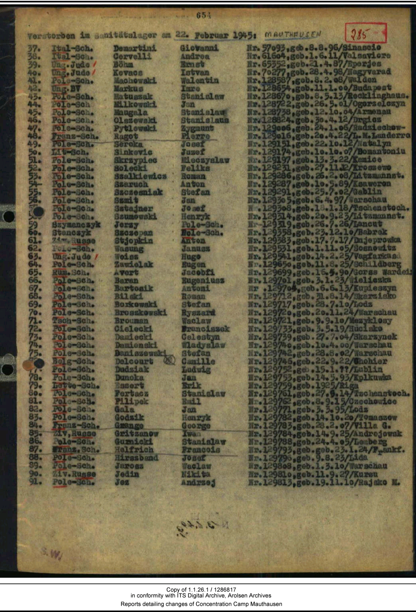
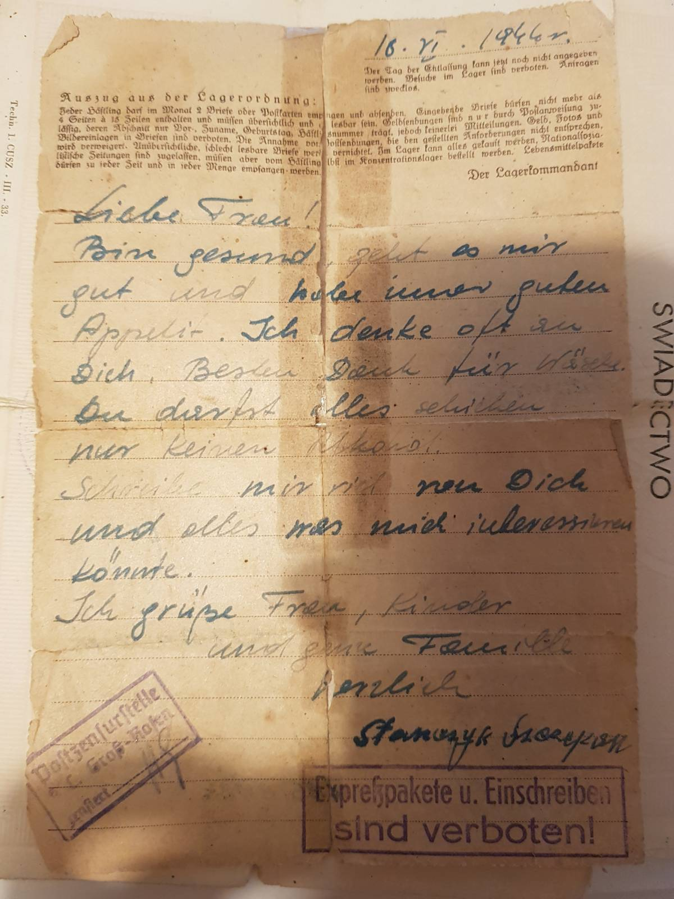
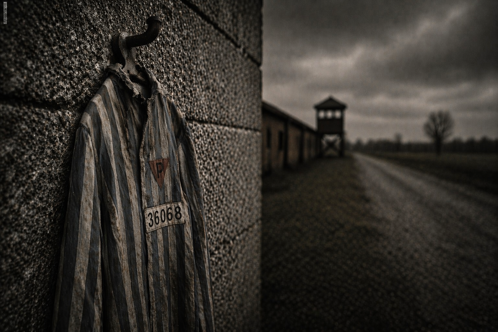

Strona pamięci poświęcona ofierze niemieckiego systemu obozów koncentracyjnych
1910–1945
Pochodził ze wsi Bobrek, niedaleko Stromca, w okolicach Radomia. W latach 1938–1944 mieszkał z rodziną w Warszawie przy ulicy Olesieńskiej 13/2.
W marcu 1944 roku został aresztowany podczas przewożenia żywności dla żony i małych dzieci mieszkających w okupowanej Warszawie. Z dużym prawdopodobieństwem po aresztowaniu został osadzony w siedzibie niemieckiej policji bezpieczeństwa (Gestapo) w Radomiu. Było to miejsce przełuchań i brutalnym śledztw, przez które przechodziło wielu mieszkańców regionu podejrzewanych o działalność konspieracyjną lub pomoc rodzinom w warunkach okpupacji.
Warunki tam panujące były skrajnie ciężkie. Więźniowie poddawani byli presji psychicznej i fizycznej, a pobyt w tym miejscu częto stanowił początek dalszej drogi przez system niemieckich więzień i obozów koncentracyjnych
21 maja 1944 roku osadzono go w niemieckim obozie koncentracyjnym Gross-Rosen, gdzie otrzymał numer więźniarski 36068.
W lutym 1945 roku został przewieziony do obozu Mauthausen w Austrii, gdzie nadano mu numer 129358.
W grudniu 1944 roku na ziemię dolnośląską wkroczyła Armia Radziecka. Więźniowie mieli nadzieję na rychłe wyzwolenie.
W styczniu 1945 roku komendanci podobozów wydali rozkazy natychmiastowej ewakuacji więźniów do obozu Gross-Rosen.
Los wyprowadzonych był tragiczny – wielu zginęło z wycieńczenia, głodu i przemocy.
Zmarł 22 lutego 1945 roku w obozie Mauthausen po morderczym marszu śmierci.
1944 – Aresztowanie
1944 – Gross-Rosen (nr 36068)
1945 – Mauthausen (nr 129358)
22 lutego 1945 – Śmierć

Lista zmarłych – wpis obozowy

Tłumaczenie listu
Listy podlegały ścisłej cenzurze – nie oddają rzeczywistych warunków życia.
Trzymany w rękach cienki, kruchy papier nie jest zwykłym dokumentem. Nie jest nawet listem w takim znaczeniu, jakie znamy dziś. To raczej ślad – dowód istnienia człowieka w miejscu, gdzie człowiek miał przestać istnieć.
List Szczepana Stańczyka powstał w niemieckim obozie koncentracyjnym Gross-Rosen. Każde jego słowo przeszło przez filtr systemu, który nie tylko kontrolował treść, ale próbował kontrolować również myśli. Więzień nie pisał swobodnie – pisał w granicach wyznaczonych przez regulamin, cenzurę i strach.
„Jestem zdrowy, wiedzie mi się dobrze i mam zawsze dobry apetyt” – zdanie, które w normalnych warunkach byłoby informacją, tutaj staje się symbolem. To formuła wymuszona. Oderwana od rzeczywistości. W świecie głodu, chorób i śmierci była koniecznością, nie wyborem.
Każde odstępstwo mogło oznaczać zniszczenie listu – a więc utratę jedynej możliwości kontaktu z rodziną. Tekst listu jest spokojny, uporządkowany, niemal bezosobowy. Brakuje w nim emocji, szczegółów, opisów. Nie dlatego, że ich nie było – lecz dlatego, że nie mogły zostać zapisane.
Ten list jest dziś jedynym namacalnym śladem po moim pradziadku. Trzymał go w rękach. Pisał – a być może jedynie się pod nim podpisał. Jeśli nie znał języka niemieckiego, mógł skorzystać z pomocy innych więźniów.
W obozie byli ludzie, którzy za papierosy, jedzenie lub inne dobra pomagali pisać listy. Wiedzieli, jak formułować zdania, aby przeszły przez obozową cenzurę i nie zostały zniszczone.
Każda próba wysłania listu była ryzykiem i kosztem. Opłacenie „piszącego” oznaczało utratę części dziennego przydziału żywności. W realiach obozowych nie był to drobiazg – to była decyzja o przetrwaniu.
Istnieje duże prawdopodobieństwo, że treść listu została sporządzona przez inną osobę, a Szczepan jedynie go podpisał. Wskazuje na to różnica między tekstem a podpisem.
Litery w treści są równe, spokojne, jakby pisane pewną ręką. Podpis jest inny – bardziej napięty, ściśnięty, jakby powstał w pośpiechu i pod presją.
Można odnieść wrażenie, że właśnie w tym miejscu pojawia się prawdziwy człowiek. Jakby ręka zdradzała to, czego nie wolno było napisać.
Bo przecież ten list – w swojej treści – jest zaprzeczeniem rzeczywistości. „Mam dobry apetyt”. „Wiedzie mi się dobrze”. W warunkach obozowych były to słowa nieprawdziwe. Wymuszone.
Ale było to jedyne możliwe kłamstwo.
Więzień musiał podpisać się pod tymi słowami, wiedząc, że tylko w ten sposób może przekazać najważniejszą informację
Że żyje.
I że gdzieś tam, poza drutami, jest ktoś, kto na tę wiadomość czeka.
Dlatego ten list nie jest opowieścią o obozie. Nie jest relacją z życia.
Jest dowodem.
Szczepan Stańczyk tam był.
Relacje świadków i ocalałych z niemieckich obozów koncentracyjnych
Relacja więźnia – transport do Mauthausen, luty 1945
A. Gładysz, „Powrót z piekła hitlerowskiego”, 1945
Relacje więźniów obozowych
Relacje powojenne
Stanisław Jagielski, „Sclavus Saltans”
Relacje więźniów
Na podstawie relacji ocalałych i publikacji powojennych
Łukasz Stańczyk, prawnuk
Cześć Jego pamięci †
Kontakt: lukastanczyk7@gmail.com
Pamięć jest formą obecności.
